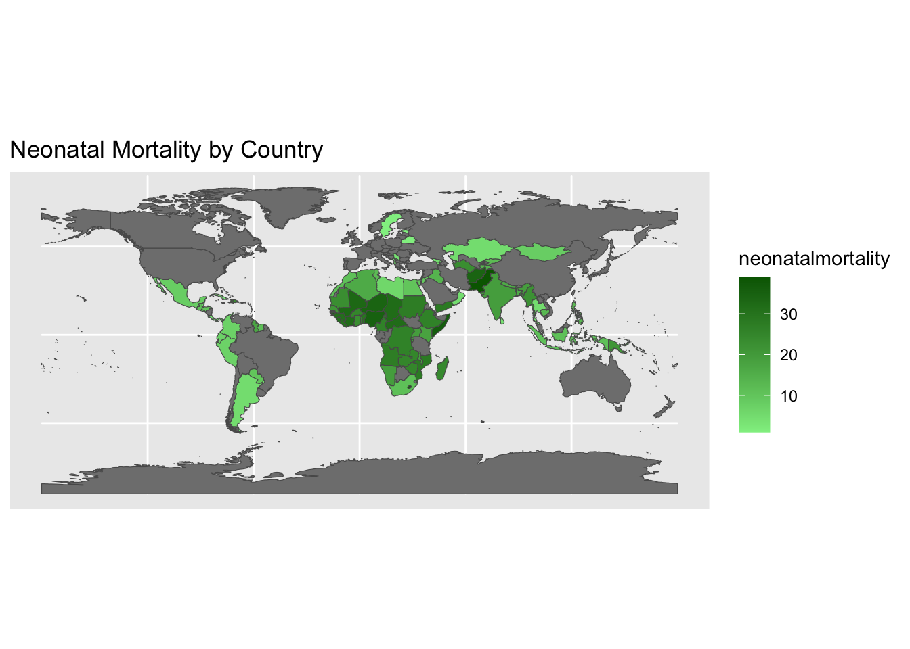
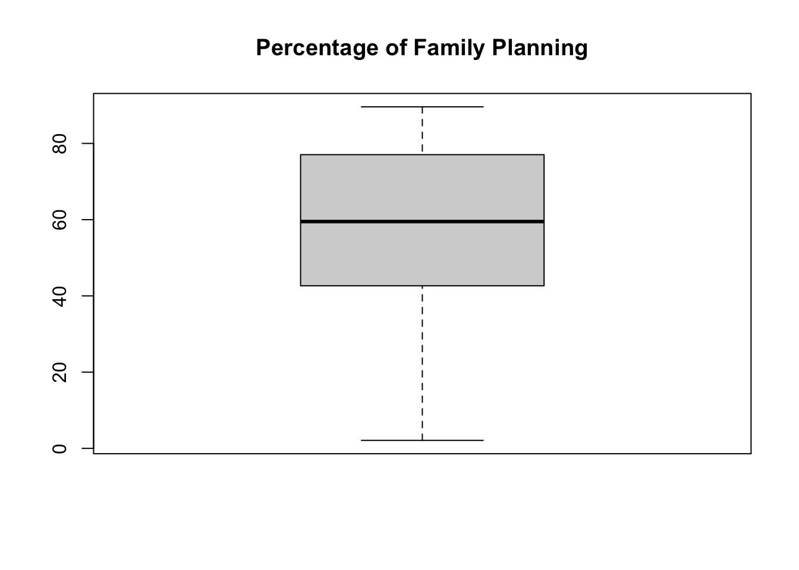
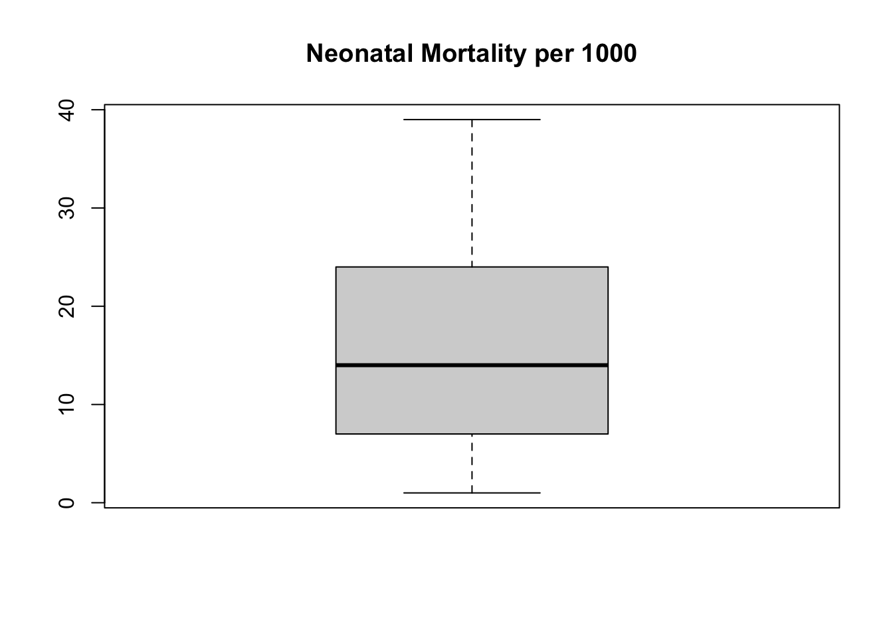
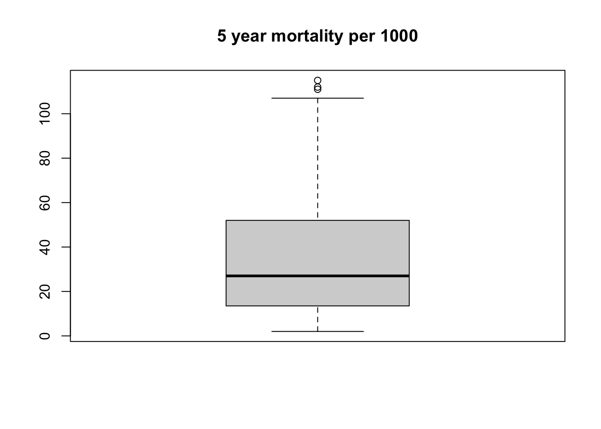
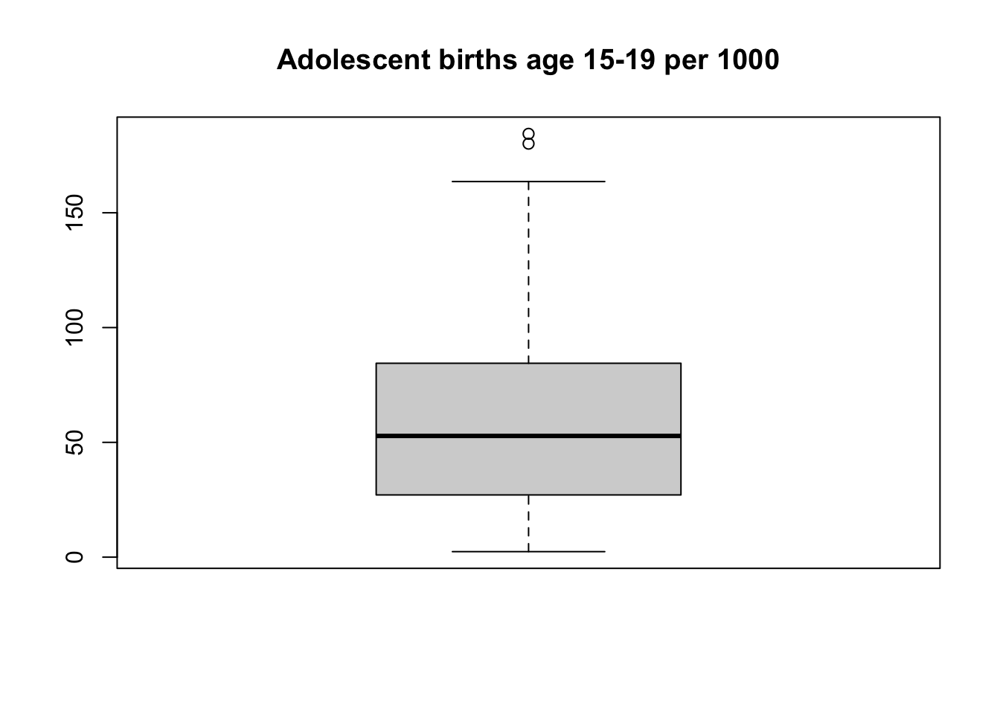
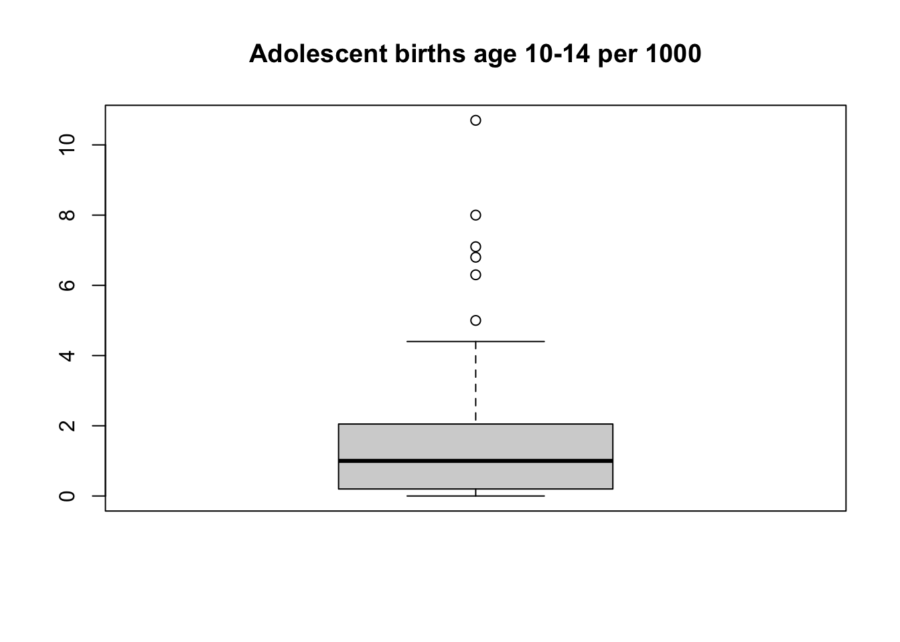
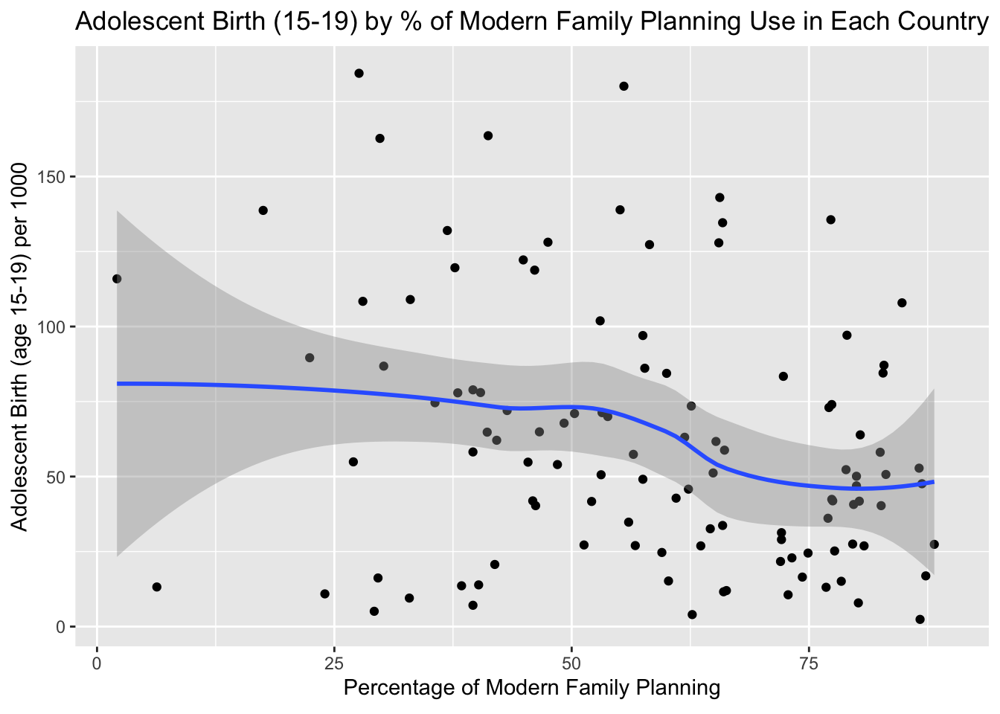
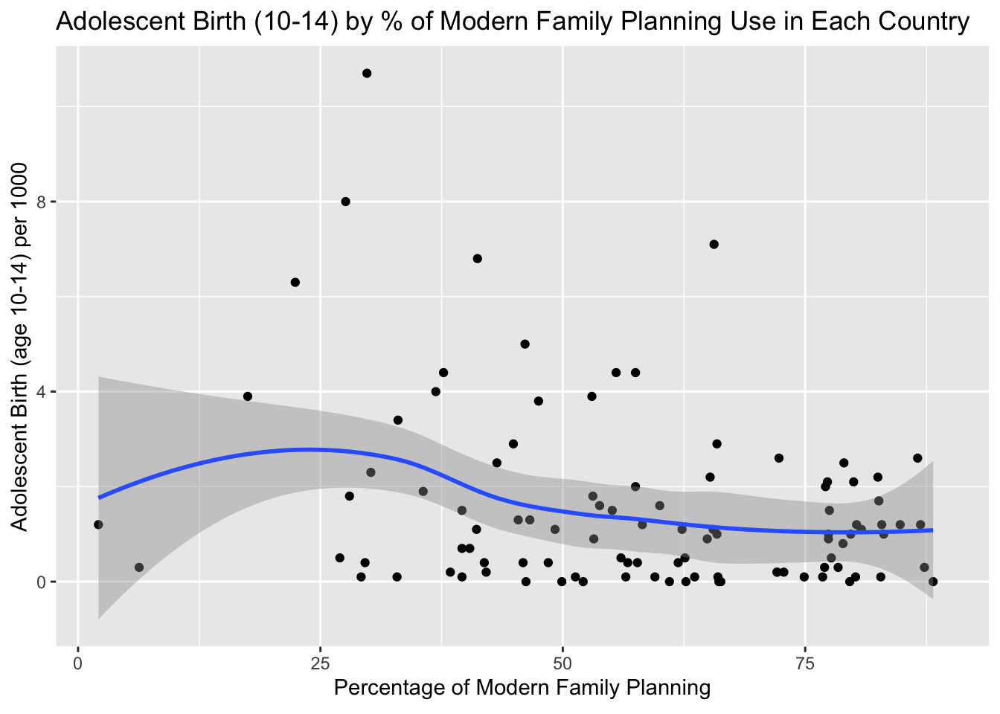

Supplemental Information
This density map shows the number of neonatal mortality per 1000 throughout the world in places we have data from.
[1] -0.3445729This is the correlation coefficient for neonatal mortality vs family planning.
[1] -0.4189029This is the correlation coefficient for 5 year mortality vs family planning.
[1] -0.2751139This is the correlation coefficient for adolescent births age 15-19 vs family planning.
[1] -0.2838636This is the correlation coefficient for adolescent births age 10-14 vs family planning.





These are the boxplots showing the distribution of data for our main variables.
`geom_smooth()` using method = 'loess' and formula = 'y ~ x'Warning: Removed 4 rows containing non-finite values (`stat_smooth()`).Warning: Removed 4 rows containing missing values (`geom_point()`).
This plot demonstrates adolescent births age 15-19 per 1000 people vs percentage of family planning. This demonstrates that though family planning increases, overall there is very little decrease in the number of adolescent births age 15-19. There is some decrease at high levels of family planning. However, there is a small overall decrease in the amount of adolescent births age 15-19 when percentage of family planning increases.
Warning: Ignoring 4 observationsThis plot demonstrates adolescent births age 15-19 per 1000 people vs percentage of family planning. However, different from the previous graph, when you hover over a point you can find out what country that point represents.
`geom_smooth()` using method = 'loess' and formula = 'y ~ x'Warning: Removed 15 rows containing non-finite values (`stat_smooth()`).Warning: Removed 15 rows containing missing values (`geom_point()`).
This plot demonstrates adolescent births age 10-14 per 1000 people vs percentage of family planning. This demonstrates that there is very little relationship between adolescent births age 10-14 and family planning. There is a very weak negative correlation but it does not look to be very significant.
Warning: Ignoring 15 observationsThis plot demonstrates adolescent births age 10-14 per 1000 people vs percentage of family planning. However, different from the previous graph, when you hover over a point you can find out what country that point represents.